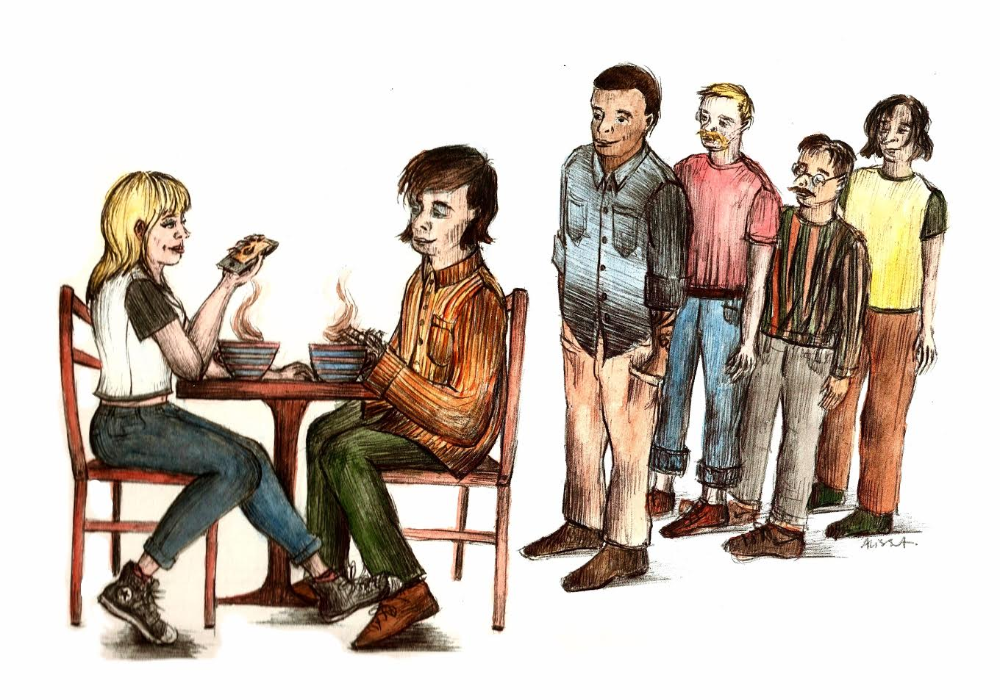

Swiped Connections:
Examining the landscape of online dating
Wendy Tran, Contributor
When I created my Tinder account, I never expected that I would end up finding a long-term relationship through it. I still remember the shocked look on my friends’ faces when I told them about how my relationship began. They congratulated me in confusion; most of them use the app for different purposes. Some of them use it to track down attractive people in their vicinity for a fling, while others look forward to networking with people outside their circles. They post the best pictures of themselves on their profile, along with a quirky
introduction that can quickly grab one’s attention. Amidst the popularity of the app, and the abundance of choices I was given, I consider myself lucky to have found what I was looking for.
According to a Leger Marketing survey, 36 per cent of Canadians between the ages of 18 and 34 used online dating in 2011. Since then, its prevalence in the country has only been increasing, with figures showing that the online dating industry has been growing by six per cent every year since 2010.
Considering the traditional motives behind dating—primarily as a means to forming a deep-rooted romantic relationship—the rise in popularity of online dating is puzzling. Statistically, online dating is not the ideal platform for finding and fostering long-term relationships: According to a 2013
study by Pew Research Center, only 23 per cent of online daters claimed they’d met a long-term spouse through the internet.
The focus of dating in the modern romantic landscape has shifted away from long-term commitments. The connection between this idea and the rise in popularity of online dating is explained through a theory by Caryl E. Rusbult, who was a professor of the Social and Organizational Psychology Department in Vrije Universiteit Amsterdam, which postulates that there are three factors that determine how interested someone is in pursuing a long-term relationship: Satisfaction, alternatives, and investment. People are more likely to commit to a partner if the levels of satisfaction and investment increase while alternatives are kept low.
Reporting over 7 million monthly users, Tinder is one of the most widely used online dating service—especially amongst millennials—with the median age of users being 26. Its functionality reflects Rusbult’s theory that increasing alternatives leads to reluctance to commit. The entire premise of Tinder and other similar apps is to provide users with seemingly endless choices. On Tinder, users can adjust the settings to their preferred gender, age, and distance. With a swipe of their fingertips, people are able shift through countless prospective partners; they are empowered by these choices, while also being fed the hope of finding a better partner. Because of this, online dating has altered people’s idealization of serial monogamy; people are not always expected to fully devote themselves to one person.
Rhett Dumonceau, a first year student of economics and history at McGill, believes that it is not even worthwhile to post an introduction on his online dating profile because so few people are actually interested in learning about others, being only interested in quick meetups.
“[There’s] no information on my [Tinder] profile,” he said. “I don’t expect a long-term relationship from it.”
Dumonceau reminisced about the dating atmosphere in his hometown of Strathmore, Alberta, recalling that most people were committed in a long-term relationship. Ever since moving to Montreal, he has been shocked by the different dating scene provided by the big city and university setting.
“It’s funny, most people I’ve talked to here are not interested in a romantic investment,” he remarked. “Either that, or [they] are cheating on their partner.”
Yet, online dating is not completely devoid of users looking for long-term commitments. Some sites such as eHarmony, Match, and OKCupid cater towards these users by attempting to foster deeper connections through a system which matches singles based on different areas of compatibility, such as personality, intellect, and values. While these sites are used widely by middle-aged demographics, they are marginally less popular among young adults compared to Tinder, with OKCupid, reporting 2.5 million monthly users at a median age of 32. An even more mature user base can be found on Match which has a median user age of 45.
Mingye Chen, a fifth year student studying economics and psychology at McGill, has used online dating on-and-off for the past two years. She explained that she is not necessarily against the idea of finding serious relationships; however, she believes it should not be a primary expectation behind online dating.
“I don’t really go into [Tinder] with that [many] expectations [...] if it works out, I’d love a long-term relationship, if it doesn’t work out, it’s fine, what do you expect? This is a hookup site,” she said. “They don’t owe me anything, I don’t owe them anything.”
When asked what she thinks is the most difficult aspect of online dating as a university student, Chen touched upon one of the most discussed social concepts in modern society: The fear of missing out.
“As a university student, I think it’s because we’re only here for a certain period of years, and it could be just a McGill problem, or like a Montreal type issue, like you said, people are reluctant to commit,” she said. “There’s this idea of FOMO [...] and people are always trying to chase the next best thing, or get a hotter, better girl or guy.”
According to a survey conducted by WayUp, the majority of users of dating apps —53 per cent of college student—are only looking to find friends through Tinder. Furthermore, for many LGBTQ people, making connections with members of the queer community, whether romantic or friendly, can be easier to navigate on online platforms.
Dating apps where the users’ sexuality is at the forefront, such as Grindr and Her, can serve as a safer space than typically heteronormative bars or clubs.
Madeleine Hubler, a first-year student of music at McGill, used Tinder to network and making friends.
“I think different people have different purposes with it, but for me, it was an interesting way to meet different people,” she remarked. “I was introduced to people I would’ve had no contact with otherwise, and some [of them] are still some of my close friends.”
Regardless of whether the user is looking for romantic relationships or friendships, the common theme seems to be the user’s appreciation of the abundance of choices. The phenomenon of “choice overload” has been studied by psychologists. In a study by Columbia Business School published in 2000, researchers found that in a grocery aisle, people were more likely to pick jam from a broader variety than when given just a handful of options. In a follow-up study, they found that there is less satisfaction when choosing from a small pool of alternatives. A similar psychology can be applied to dating: When given a variety of options, people are more satisfied that they can pick and choose as they please. This temporary happiness is not a mystery, but a psychological process.
Chen explained how this choosing process plays a part in making online dating enjoyable and addictive.
“It was very entertaining, because you’re judging people. It’s like a binary system, it’s like a ‘zero’ or a ‘one,’ a ‘yes’ or a ‘no,’ and that was always very entertaining,” she said. “Also, matching with people you know [is] hilarious. [...] You are obviously making a judgment based on their appearance, and who they appear to hang out with or what they do, based on some pictures, and a tiny little description. Basically, you’re boiling someone down to just ‘how hot is this person’ or ‘how good looking are they,’ and that’s [kind of] shallow.”
However, the high number of choices presented by online dating does not make it a perfect avenue for building relationships: Exposure to such a high availability of potential partners has affected how people deal with obstacles and eventual breakups in their relationship. In an article for The Atlantic in 2013, Dan Slater wrote about a man named Jacob and his love life. Jacob met a woman named Rachel on an online dating service, and the two started dating. However, when things were rough between them, Jacob acted much more optimistic and complacent than the situation called for; the high availability of choices through online dating had warped his approach towards relationships.
“Having met Rachel so easily online, [Jacob] felt confident that, if he became single again, he could always meet someone else,” Slater wrote.
Many users, however, do not even progress beyond the initial game of choosing and matching. According to a study by Pew Research Center published in Feb. 2016, only about one-third of people who have used online dating have actually gone on a date through it. It is during the conversation process after the match is made, when the feelings generally fade out. Dumonceau feels that talking to people through online dating apps often ends up feeling scripted and insincere.
“[Even] when it comes to parties or events for school, I can only handle talking to a handful of people at the same time before getting tired [of] having to rehearse the same speech over and over again,” he said. “I prefer to space things out to make things feel more genuine.”
While this is an aspect of online dating he did not enjoy, Dumonceau concedes that there is much less pressure to create an immediate connection with someone when meeting people online. In a way, this had made him feel less restricted about choosing who he should talk to.
“In order to feel legitimately interested in a long-term relationship, there has to be a ‘spark,’ /per se/,” he said. “In the case of a more short-term relationship [through online dating], I am more open-minded.”
Chen believes that people’s individuality is often diminished due to the fact that they have to conform to a certain format in order to be successful in online dating.
“I think [my] problem with [meeting men online] lies in how [straight] men think they should talk to women on these apps,” she said. “The way a lot of guys feel they need to talk to be successful on this app is the same. Because that’s how they see their friends—especially friends that get a lot of girls—talk to these girls on the app.”
Developers of dating apps have come up with methods to address this shortfall of conversing online. Many different dating apps attract users using creative premises. For example, on Bumble, the female must send the first message. There is also Happn, an app which allows users to discover people they’ve crossed paths with in real life, based on their smartphone’s GPS system.
There is a multitude of alternative dating sites and apps available online, each catering to people with different backgrounds, preferences, personalities, priorities and interests. There is something for everyone because the search for a partner is a basic and natural part of almost everyone’s life.
Humans crave connections and the ability to relate to someone. The medium through which a person uses to find their partner may shape their approach and experience with dating, but at the end of the day, what matters most is their satisfaction in life.

(Alissa Zilberchteine / The McGill Tribune)